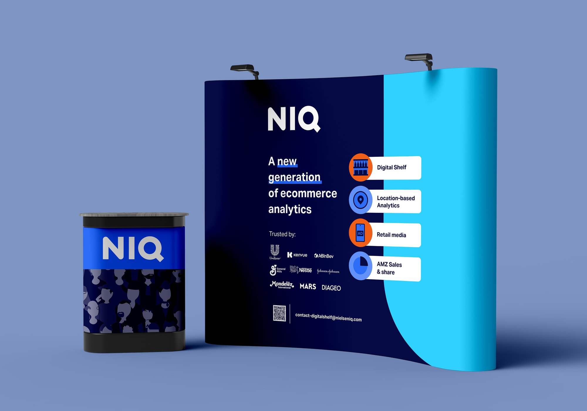
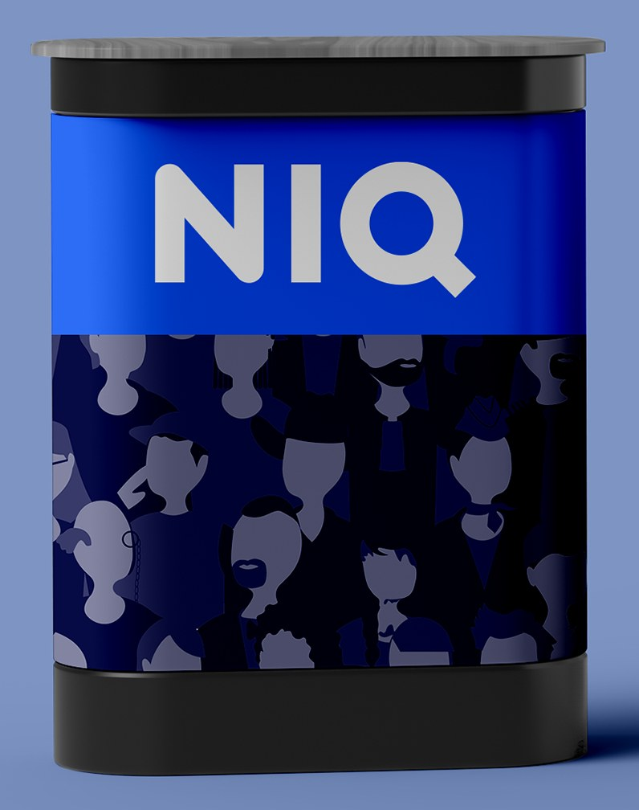

Print · Event design
NIQ event booth
A booth wrap and lectern for the NIQ for Digital Commerce team's events in London.
- Client
- NIQ for Digital Commerce
- Year
- 2025
- Role
- Designer
- Tools
- Adobe Illustrator

The brief
The NIQ for Digital Commerce team in London needed a booth for in-person events: something that would draw people in, show off the team's digital commerce expertise, and give them a professional but lively space to talk with visitors.
The project covered two pieces: a booth wrap for the main structure, and a lectern to anchor presentations and conversations.
01
The booth wrap
Booth wrap
A clean layout with the headline, four service tiles with simple icons, and a “Trusted by” wall of well-known clients.
I used NIQ's signature colours boldly so they would still pop once printed, since print always looks duller than a screen. A QR code to the NIQ website and a contact email make the next step easy.
02
The lectern
Lectern
A minimal design to go with the booth. The NIQ logo sits above the brand's signature “tapestry” of illustrated consumers.

Production
I worked with a London-based printer to produce the booth, preparing the four technical cut files in Adobe Illustrator, which were then assembled onto the frame.
Results
The booth brought a lot of people to the stand, and both visitors and colleagues gave great feedback on the design.